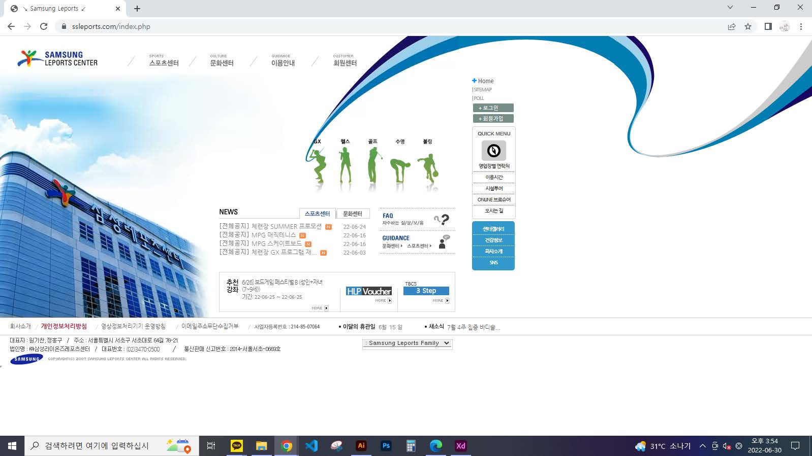
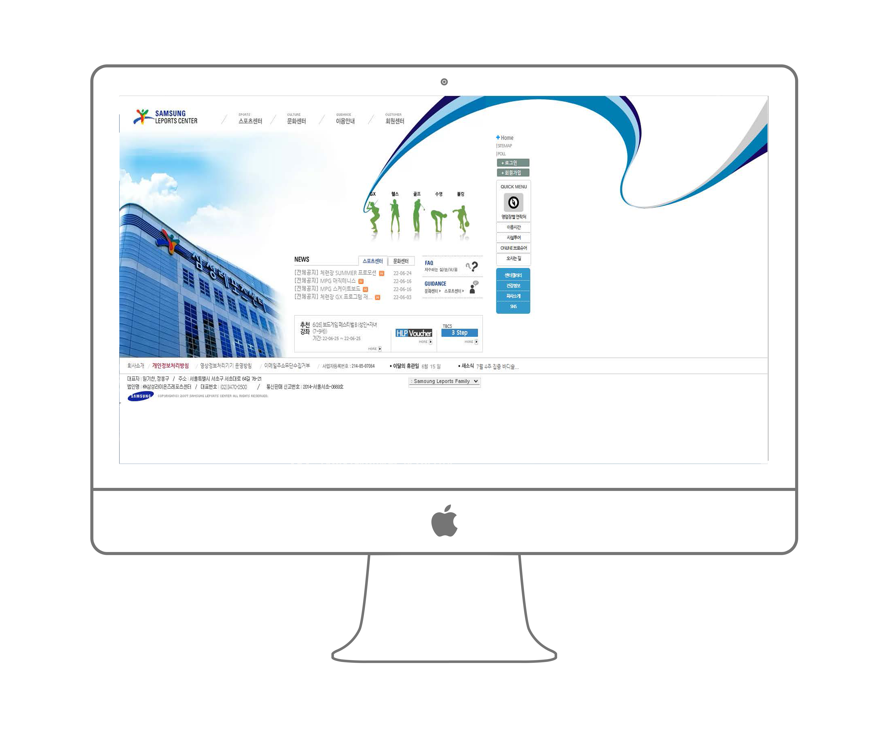
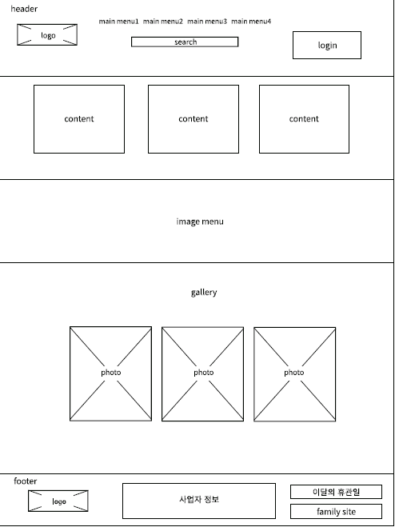
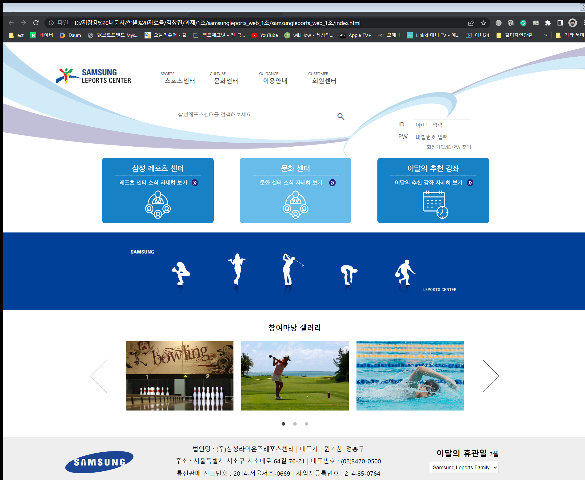

프로젝트 개요
삼성레포츠센터 리뉴얼
- 프로젝트 설명 : 삼성레포츠센터 리뉴얼
- 프로젝트 제작기간 : 1개월
- 프로젝트 유형 : 웹디자인
- 프로젝트 참여도 : 팀프로젝트(디렉터역)
삼성레포츠센터


프로젝트 목표
- 사용자의 편의성을 고려한 ui설계
- 직관성과 가독성을 높이기
중점사항
- 지나치게 큰 우측 여백
- 불편하고 조화롭지 못한 퀵메뉴
- 많은 텍스트양과 눈에 띄지않는 아이콘들

컨셉트
- 텍스트양을 줄여 가속성 높이기
- 테이블태그로 인한 한쪽 쏠림 바로 잡기
- 깔끔하고 정돈된 느낌으로 제작
색상 및 폰트
- 폰트는 현대적으로 로보토를 사용함
- 정보의 중요도에 따라 다양한 굵기와 크기 사용
- 기존의 분위기는 유지하되 몇가지 색 추가
로보토 Regular
로보토 Medium
로보토 Bold

테이블태그로 인한 오른쪽 여백을
없애고 가운데 정렬 시킴
텍스트양을 대폭 줄이고 그에 따라
아이콘 및 새로운 이미지 네비를 만듬
하단 푸터 영역을 현대에 맞게 깔끔하게
정리정돈함